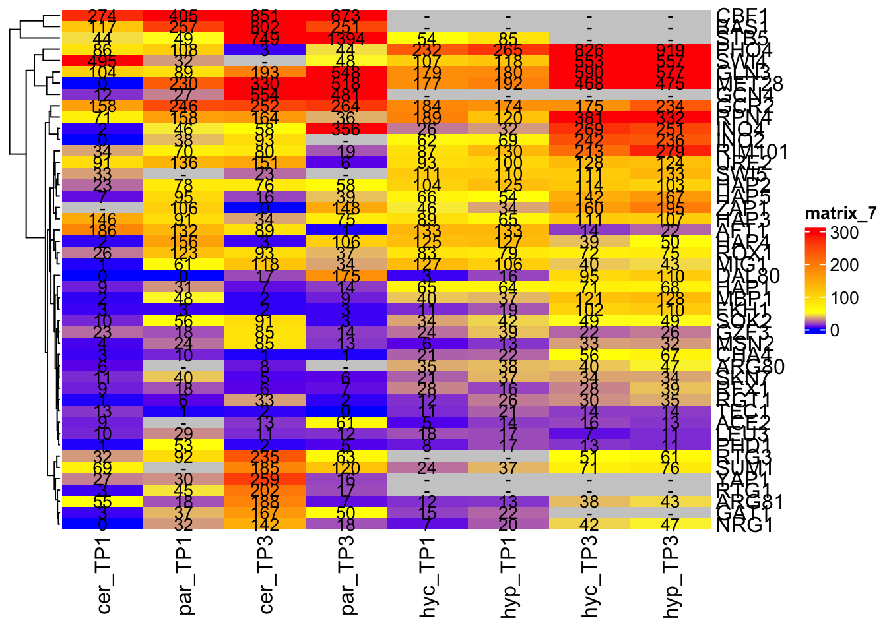
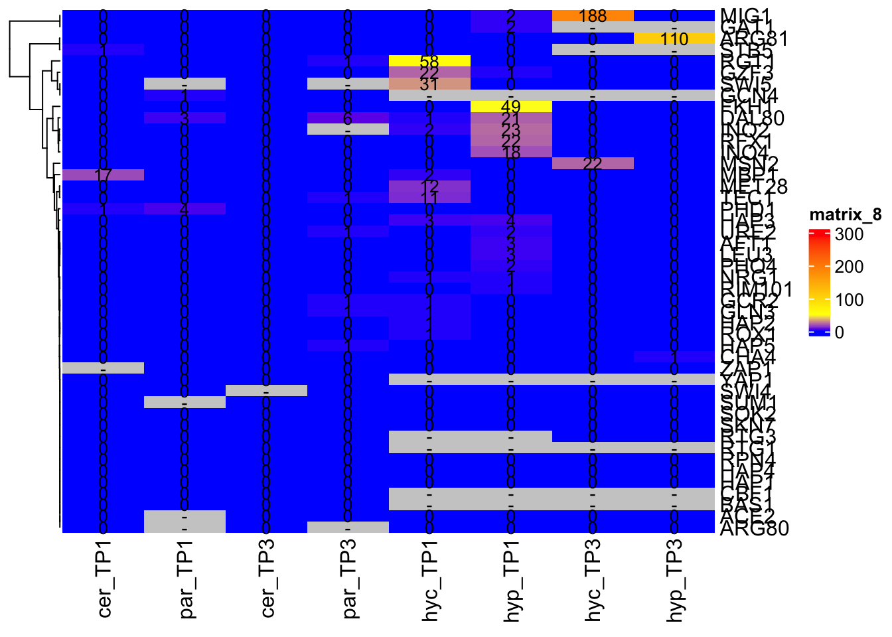
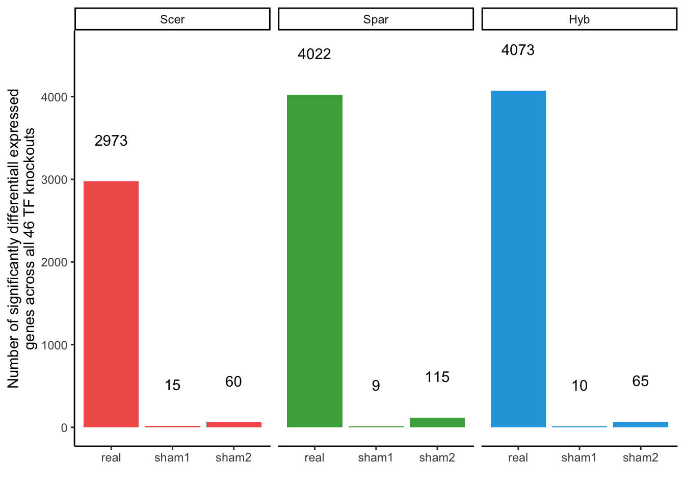
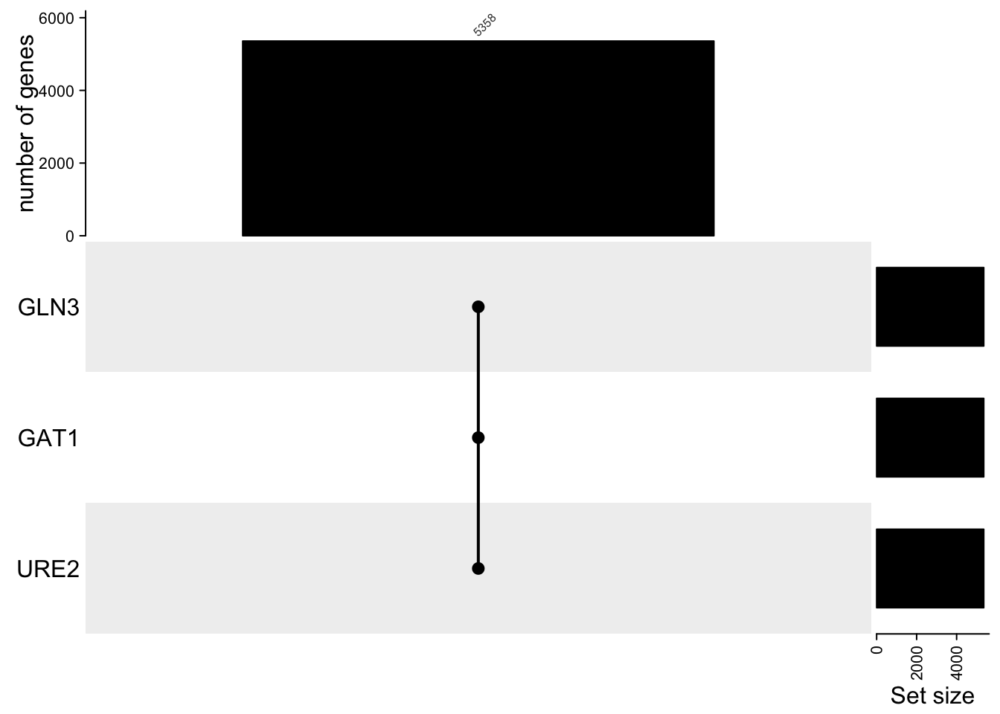

sapply(c("dplyr", "readr", "tidyr", "purrr", "ggplot2", "ggpubr", "matrixStats", "ComplexHeatmap", "circlize"), require, character.only=TRUE)## dplyr readr tidyr purrr ggplot2
## TRUE TRUE TRUE TRUE TRUE
## ggpubr matrixStats ComplexHeatmap circlize
## TRUE TRUE TRUE TRUEload("data_files/CleanedCounts.RData")
load("data_files/DESeq2.RData")
TFnames <- setdiff(unique(gsub("delete", "", sample_info$genotype)), "WT")
p_thresh <- 0.05 # because DESeq2 already corrected for FDR with alpha = 0.05
eff_thresh <- 1
TFdel_lookup <- read_delim("data_files/downloaded_genomes_and_features/yeastract_46TFs.csv", col_names = FALSE, col_select = c(1,2), delim = ";") # gets some warnings, but so far has been fine## Rows: 46 Columns: 2
## ── Column specification ─────────────────────────────────────────────────────────────
## Delimiter: ";"
## chr (2): X1, X2
##
## ℹ Use `spec()` to retrieve the full column specification for this data.
## ℹ Specify the column types or set `show_col_types = FALSE` to quiet this message.colnames(TFdel_lookup) <- c("common", "systematic")# tables/heatmaps for TP1 and TP3 of counts of how many genes are affected by each TFdel (either direction) in each species and hybrid alleles
effectsdf <- TFdeldf |>
filter(timepoint != "TP2") |>
group_by(deletion, organism, timepoint) |>
summarise(nGenes = sum(abs(lfc) > eff_thresh &
padj < p_thresh)) |>
pivot_wider(id_cols = c("deletion"),
names_from = c("organism", "timepoint"),
values_from = "nGenes") |>
ungroup()
effects_mat <- select(effectsdf, -deletion) |> as.matrix()
rownames(effects_mat) <- effectsdf$deletion
# # In case you're curious if there's a relationship to differential expression of TFs between species (there isn't):
# # ordering by expression difference (lfc) of TFs between species
# tf_order <- TFdf |> filter(common %in% goodTFs & experiment == "LowN") |>
# arrange(desc(effect_size_species)) |> select(common) |> pull()
# tf_order <- c(tf_order, setdiff(goodTFs, tf_order))
# # or mean expression level (also not related):
# getMeanExpr <- function(.gene_idx) {
# return(mean(counts[.gene_idx,]))
# }
# tf_order <- TFdf |> filter(common %in% setdiff(goodTFs, "HAP1")) |>
# select(common, gene_name) |> unique()
#
# tf_order$mean_expr <- map(tf_order$gene_name, getMeanExpr) |>
# unlist()
# tf_order <- arrange(tf_order, desc(mean_expr)) |> select(common) |> pull()
# tf_order <- c(tf_order, "HAP1")
col_fun <- colorRamp2(c(0, 50, 300), c("blue", "yellow", "red"))
p <- Heatmap(effects_mat, col = col_fun, na_col = "grey80",
column_order = c("cer_TP1", "par_TP1", "cer_TP3", "par_TP3",
"hyc_TP1", "hyp_TP1", "hyc_TP3", "hyp_TP3"),
# row_order = tf_order,
cell_fun = function(j, i, x, y, width, height, fill) {
output <- if_else(!(is.na(effects_mat[i, j])),
true = as.character(effects_mat[i, j]),
false = "-")
grid.text(output, x, y, gp = gpar(fontsize = 10))
})
p
# # version including TP2
# pdf("../../aligning_the_molecular_phenotype/paper_figures/TFdel/TFdel_heatmap_all3tps.pdf",
# width = 5, height = 8)
# Heatmap(effects_mat, col = col_fun, na_col = "grey80",
# column_order = c("cer_TP1", "par_TP1", "cer_TP2", "par_TP2", "cer_TP3", "par_TP3",
# "hyc_TP1", "hyp_TP1", "hyc_TP2", "hyp_TP2", "hyc_TP3", "hyp_TP3"),
# # row_order = tf_order,
# cell_fun = function(j, i, x, y, width, height, fill) {
# output <- if_else(!(is.na(effects_mat[i, j])),
# true = as.character(effects_mat[i, j]),
# false = "-")
# grid.text(output, x, y, gp = gpar(fontsize = 10))
# })
# dev.off()
### Repeating with sham, all TFdels were 2 randomly sampled WT replicates
effectsdf <- TFdeldf_sham1 |> # change to sham2 to see if random sampling matters
filter(timepoint != "TP2") |>
group_by(deletion, organism, timepoint) |>
summarise(nGenes = sum(abs(lfc) > eff_thresh &
padj < p_thresh)) |>
pivot_wider(id_cols = c("deletion"),
names_from = c("organism", "timepoint"),
values_from = "nGenes") |>
ungroup()
effects_mat <- select(effectsdf, -deletion) |> as.matrix()
rownames(effects_mat) <- effectsdf$deletion
col_fun <- colorRamp2(c(0, 50, 300), c("blue", "yellow", "red"))
p <- Heatmap(effects_mat, col = col_fun, na_col = "grey80",
column_order = c("cer_TP1", "par_TP1", "cer_TP3", "par_TP3",
"hyc_TP1", "hyp_TP1", "hyc_TP3", "hyp_TP3"),
# row_order = tf_order,
cell_fun = function(j, i, x, y, width, height, fill) {
output <- if_else(!(is.na(effects_mat[i, j])),
true = as.character(effects_mat[i, j]),
false = "-")
grid.text(output, x, y, gp = gpar(fontsize = 10))
})
p
# basic volcano plot to compare power
makeVolcanoPlot <- function(.tfdeldf, .tf, .org, .timepoint) {
plotdf <- .tfdeldf |> filter(organism == .org &
timepoint == .timepoint &
deletion == .tf)
ggplot(plotdf, aes(x = lfc, y = -log10(pval))) +
geom_point(aes(color = padj < p_thresh)) +
ylim(c(0, 15)) +
xlim(c(-5, 5))
}
# At each TP, compare all 4 species with volcano plots
# One example where Spar has flat pvals:
makeVolcanoPlot(.tfdeldf = TFdeldf, .tf = "YAP1", .org = "cer", .timepoint = "TP3")## Warning: Removed 40 rows containing missing values or values outside the scale range
## (`geom_point()`).
#makeVolcanoPlot(.tfdeldf = TFdeldf, .tf = "YAP1", .org = "par", .timepoint = "TP3")
# One example where Scer does:
#makeVolcanoPlot(.tfdeldf = TFdeldf, .tf = "MET28", .org = "cer", .timepoint = "TP1")
#makeVolcanoPlot(.tfdeldf = TFdeldf, .tf = "MET28", .org = "par", .timepoint = "TP1")
# Example where Spar has a ton of TFdel replicates:
#makeVolcanoPlot(.tfdeldf = TFdeldf, .tf = "HAP5", .org = "cer", .timepoint = "TP1")
#makeVolcanoPlot(.tfdeldf = TFdeldf, .tf = "HAP5", .org = "par", .timepoint = "TP1")
#makeVolcanoPlot(.tfdeldf = TFdeldf, .tf = "HAP5", .org = "cer", .timepoint = "TP3")
#makeVolcanoPlot(.tfdeldf = TFdeldf, .tf = "HAP5", .org = "par", .timepoint = "TP3")
# Spar has more detected, but Scer does also have a handful of sig (mainly TP3)makeUpsetPlot(.df = filter(TFdeldf, organism == "cer"),
.group_name = "deletion",
.group_members = c("GLN3", "GAT1", "URE2"),
.item_names = "gene_name")
# also true in par, hyc, hyp, but GAT1 and URE2 just have way fewer single effects and GLN3 has way more:
makeUpsetPlot(.df = filter(TFdeldf, organism == "par"),
.group_name = "deletion",
.group_members = c("GLN3", "GAT1", "URE2"),
.item_names = "gene_name")makeUpsetPlot(.df = filter(TFdeldf, organism == "hyc"),
.group_name = "deletion",
.group_members = c("GLN3", "GAT1", "URE2"),
.item_names = "gene_name")makeUpsetPlot(.df = filter(TFdeldf, organism == "hyp"),
.group_name = "deletion",
.group_members = c("GLN3", "GAT1", "URE2"),
.item_names = "gene_name")# so Spar's URE2-GAT1-GLN3 environment is dominant in the hybrid.
# Scer has much higher GAT1 expression, but Spar's GLN3 deletion has more effect
# Other big difference: Scer has about 50 GAT1-URE2 shared genes, where Spar and hybrid only have 3-5
# What are these genes?
cer_tab <- TFdeldf |> filter(deletion %in% c("GAT1", "URE2") &
organism == "cer") |> select(gene_name) |>
table() |> sort(decreasing = TRUE)
cer_genes <- rownames(cer_tab)[cer_tab == 2]
par_tab <- TFdeldf |> filter(deletion %in% c("GAT1", "URE2") &
organism == "par") |> select(gene_name) |>
table() |> sort(decreasing = TRUE)
par_genes <- rownames(par_tab)[par_tab == 2]
intersect(cer_genes, par_genes) # DUR12, MEP1, both urea/ammonia enzymes## character(0)# where are they in non-Scer organisms?
TFdeldf |> filter(gene_name %in% setdiff(cer_genes, par_genes)) |>
select(deletion, organism) |> table()## organism
## deletion cer hyc hyp par
## ACE2 4 4 8 3
## AFT1 4 4 8 9
## ARG80 4 4 8 0
## ARG81 4 4 8 9
## BAS1 4 0 0 9
## CBF1 4 0 0 9
## CHA4 4 4 8 9
## DAL80 4 4 8 9
## FKH1 4 4 8 9
## GAT1 4 3 5 9
## GCN4 4 0 0 9
## GCR2 4 4 8 9
## GLN3 4 4 8 9
## GZF3 4 4 8 9
## HAP1 4 4 8 9
## HAP2 4 4 8 9
## HAP3 4 4 8 9
## HAP4 4 4 8 9
## HAP5 4 4 8 9
## INO2 4 4 8 3
## INO4 4 4 8 9
## LEU3 4 4 8 9
## MBP1 4 4 8 9
## MET28 4 4 8 9
## MIG1 4 4 8 9
## MSN2 4 4 8 9
## NRG1 4 4 8 9
## PHD1 4 4 8 9
## PHO4 4 4 8 9
## RFX1 4 4 8 9
## RGT1 4 4 8 9
## RIM101 4 4 8 6
## ROX1 4 4 8 9
## RPN4 4 4 8 9
## RTG1 4 0 0 9
## RTG3 4 3 6 9
## SKN7 4 4 8 9
## SOK2 4 4 8 9
## STB5 4 1 2 9
## SUM1 4 4 8 3
## SWI4 2 4 8 9
## SWI5 4 4 8 0
## TEC1 4 4 8 9
## URE2 4 4 8 6
## YAP1 4 0 0 9
## ZAP1 2 4 8 9# two conclusions:
# 1) either both parents have a lot of effects or both hybrid alleles do (GLN3, GCR2, MET28 are exceptions where all 4 have many effects)
# 2) when there is a stark difference in which TF affects which organism, the Scer parental gene copies are most sensitive (SOK2, STB5, RTG3, URE2, GZF3, GAT1, GCN4, ARG81)
# what clusters are these genes in?
# TODO: b/c we're not doing clustering for this TFdel paper, change to "conserved decreasing" and "conserved increasing" (and maybe a third "uncorrelated" category if you want to use it? Only if it's helpful to provide biological insight with the DALs)
# finaldf |> filter(gene_name %in% setdiff(cer_genes, par_genes)) |>
# select(cer, par) |> table() # heavily conserved, but even split between 1-1 and 2-2
# gene_idxs11 <- finaldf |> filter(gene_name %in% setdiff(cer_genes, par_genes) &
# cer == 1 & par == 1) |> select(gene_name) |> pull()
# gene_idxs22 <- finaldf |> filter(gene_name %in% setdiff(cer_genes, par_genes) &
# cer == 2 & par == 2) |> select(gene_name) |> pull()
# getGOSlimDf(.idxs = gene_idxs11, .group_name = "GAT1_URE2_ScerUnique11")
# Conserved increasing: 12 catabolic genes (including allatonin degredation genes DALs 1, 2, 4, 7)
# getGOSlimDf(.idxs = gene_idxs22, .group_name = "GAT1_URE2_ScerUnique22")
# Conserved decreasing: 18 nucleolus/15 rRNA processing genes, 6 helicase (mainly DEAD box RNA helicases for rRNA processing)
# # What timepoint is the dynamics affected? If this is related to the URE2-GAT1 interaction, we'd expect the LowN timepoint
# # 1-1
# plotGenesTFdel(.gene_idxs = gene_idxs11, .tf = "GAT1") # yes later timepoint, mainly Scer but a little Spar
# plotGenesTFdel(.gene_idxs = gene_idxs11, .tf = "URE2") # both timepoints, just Scer
# # what about hybrid?
# plotGenesTFdel(.gene_idxs = gene_idxs11, .tf = "GAT1", .parents_or_hybrid = "hybrid")
# plotGenesTFdel(.gene_idxs = gene_idxs11, .tf = "URE2", .parents_or_hybrid = "hybrid")
# # Interestingly there is an effect at the early timepoint in both hybrid alleles. Why weren't they flagged as dynamic effects?
# effectsdf |> filter(organism %in% c("hyc", "hyp") &
# deletion %in% c("GAT1", "URE2") &
# gene_name %in% gene_idxs11) |> select(effect, deletion) |> table()
# # They're all URE2 only, but there is a slight effect in GAT1
# TFdeldf |> filter(organism %in% c("hyc", "hyp") &
# deletion == "GAT1" &
# timepoint == "TP1" &
# gene_name %in% gene_idxs11) |>
# arrange(desc(lfc)) # Only enough power to detect a couple, namely the very classy haze protective factor HPF1, which reduces cloudiness in white wines
# # But it's not just HPF1/YOL155C causing this -- most hybrid orthologs are up decently in URE2, just without significant pvalues
#
# # 2-2
# plotGenesTFdel(.gene_idxs = gene_idxs22, .tf = "GAT1") # yowza later timepoint, only Scer
# plotGenesTFdel(.gene_idxs = gene_idxs22, .tf = "URE2") # mostly later timepoint, also yowza, only Scer
# # hybrid
# plotGenesTFdel(.gene_idxs = gene_idxs22, .tf = "GAT1", .parents_or_hybrid = "hybrid")
# plotGenesTFdel(.gene_idxs = gene_idxs22, .tf = "URE2", .parents_or_hybrid = "hybrid")
# # Here the hybrid effect at TP3 is in the opposite direction (and weaker)
#
# # Taking stock: identified ~50 genes that had dynamics affected by both GAT1 and URE2 deletion
# # in Scer but not in Spar or hybrid alleles
# # Interesting b/c GAT1 is expressed much higher in Scer (and hyc allele transiently in response to LowN)
# # These genes are 50-50 split between increasing and decreasing cluster, but they have all conserved dynamics btwn species
# # GAT1/URE2 deletion affects late timepoint the strongest in Scer, no effect in Spar
# # in hybrid, there is some evidence of an early timepoint effect---especially URE2 delete on increasing genes
# # but the late timepoint effect is really only seen in Scer
#
# # investigating GAT1 Scer_only regulated genes
# # first increasing genes
# gene_idxs_par <- getGeneGroup(.tf = "GAT1", .tp = "TP3", .lfc_sign = 1,
# .clust = 2, .org = "par")
# gene_idxs_cer <- getGeneGroup(.tf = "GAT1", .tp = "TP3", .lfc_sign = 1,
# .clust = 2, .org = "cer")
# plotdf <- getGroupDf(.tf = "GAT1", .tp = "TP3", .lfc_sign = 1,
# .clust = 2, .genes_cer = gene_idxs_cer,
# .genes_par = gene_idxs_par)
# ggplot(plotdf, aes(x = lfc_cer, y = lfc_par)) +
# geom_point(aes(color = tf_effect)) +
# geom_abline(slope = 1, intercept = 0)
# # Scer-only TF response, conserved dynamics
# gene_idxs <- plotdf |> filter(tf_effect == "Scer only" & dynamics == "conserved" &
# par == 2) |>
# select(gene_name) |> pull()
# plotGenesTFdel(.tf = "GAT1", .gene_idxs = gene_idxs)
# plotGenesTFdel(.tf = "GAT1", .gene_idxs = sample(gene_idxs, size = 12), .single_genes = TRUE, .normalization = "scale")
# # (there are no decreasing genes for this cluster)
#
# # investigating GAT1 Scer_only regulated genes
# # first increasing genes
# gene_idxs_par <- getGeneGroup(.tf = "GAT1", .tp = "TP3", .lfc_sign = 1,
# .clust = 1, .org = "par")
# gene_idxs_cer <- getGeneGroup(.tf = "GAT1", .tp = "TP3", .lfc_sign = 1,
# .clust = 1, .org = "cer")
# plotdf <- getGroupDf(.tf = "GAT1", .tp = "TP3", .lfc_sign = 1,
# .clust = 1, .genes_cer = gene_idxs_cer,
# .genes_par = gene_idxs_par)
# ggplot(plotdf, aes(x = lfc_cer, y = lfc_par)) +
# geom_point(aes(color = tf_effect)) +
# geom_abline(slope = 1, intercept = 0)
# # Scer-only TF response, conserved dynamics
# gene_idxs <- plotdf |> filter(tf_effect == "Scer only" & dynamics == "conserved" &
# par == 1) |>
# select(gene_name) |> pull()
# plotGenesTFdel(.tf = "GAT1", .gene_idxs = gene_idxs)
# plotGenesTFdel(.tf = "GAT1", .gene_idxs = sample(gene_idxs, size = 12), .single_genes = TRUE, .normalization = "scale")
# # next decreasing genes
# gene_idxs_par <- getGeneGroup(.tf = "GAT1", .tp = "TP3", .lfc_sign = -1,
# .clust = 1, .org = "par")
# gene_idxs_cer <- getGeneGroup(.tf = "GAT1", .tp = "TP3", .lfc_sign = -1,
# .clust = 1, .org = "cer")
# plotdf <- getGroupDf(.tf = "GAT1", .tp = "TP3", .lfc_sign = -1,
# .clust = 1, .genes_cer = gene_idxs_cer,
# .genes_par = gene_idxs_par)
# ggplot(plotdf, aes(x = lfc_cer, y = lfc_par)) +
# geom_point(aes(color = tf_effect)) +
# geom_abline(slope = 1, intercept = 0)
# # Scer-only TF response, conserved dynamics
# gene_idxs <- plotdf |> filter(tf_effect == "Scer only" & dynamics == "conserved" &
# par == 1) |>
# select(gene_name) |> pull()
# plotGenesTFdel(.tf = "GAT1", .gene_idxs = gene_idxs)
# plotGenesTFdel(.tf = "GAT1", .gene_idxs = sample(gene_idxs, size = 12), .single_genes = TRUE, .normalization = "scale")